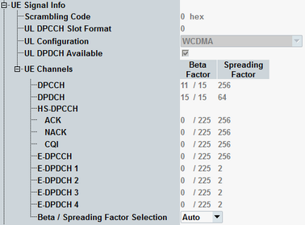

The "UE Signal Info" parameters describe properties of the measured uplink WCDMA signal that the R&S CMW needs for synchronization and decoding. The parameters are common measurement settings, i.e. a parameter has the same value in all WCDMA measurements for which it is relevant (e.g. PRACH measurement and multi-evaluation measurement).
While the combined signal path scenario is active, these parameters are automatically set to suitable values, compatible with the WCDMA signaling application. See also parameter "Scenario = Combined Signal Path".

Number of the long code that is used to scramble the uplink WCDMA signal. The scrambling code number must be in the range 0 to FFFFFF (hex) corresponding to 0 to 16777215 decimal.
Individual values can be set per carrier in a dual uplink carrier configuration.
Uplink DPCCH slot format in the range between 0 and 5. The slot format defines the length of the individual data fields in the DPCCH. The multi-evaluation measurement can be performed with arbitrary UL slot formats, including the slot formats with variable transport format (1, 3, 4).
Individual values can be set per carrier in a dual uplink carrier configuration.
Automatic configuration (CSP)
- QPSK: QPSK signal (one DPCCH and one DPDCH with the same gain factor). Measurements related to the code domain (CD monitor, CDP vs. slot, CDE vs. slot) are not performed in this mode.
- "WCDMA": R99 signal carrying a single DPCH according to standard 3GPP/FDD
- "HSDPA": R6 signal with HSDPA-related channels (HS-DPCCH)
- "HSUPA": R6 signal with HSUPA channels (E-DPCH consisting of an E-DPCCH and up to four E-DPDCHs)
- "HSDPA+HSUPA": R6 signal with HSDPA-related channels and HSUPA channels
- "HSDPA Plus": R7 signal with HSDPA+ related channels, 16QAM supported
- "HSDPA Plus + HSUPA": R7 signal with HSDPA+ related channels and HSUPA channels
- "DC-HSDPA Plus + DC-HSUPA": R9 signal, with dual carrier HSDPA+ and dual carrier HSUPA channels including support of dual band dual carrier HSDPA+
- "DC-HSDPA Plus": R8 signal, dual carrier HSDPA+ test mode active
- "DC-HSDPA Plus + HSUPA": R8 signal, dual carrier HSDPA+ and HSUPA test mode active
- "3C-HSDPA Plus": R10 signal, three carrier HSDPA+ test mode active
- "3C-HSDPA Plus + HSUPA": R10 signal, three carrier HSDPA+ and HSUPA test mode active
- "3C-HSDPA Plus + DC-HSUPA": R10 signal, three carrier HSDPA+ and dual carrier HSUPA test mode active
- "4C-HSDPA Plus": R10 signal, four carrier HSDPA+ test mode active
- "4C-HSDPA Plus + HSUPA": R10 signal, four carrier HSDPA+ and HSUPA test mode active
- "4C-HSDPA Plus + DC-HSUPA": R10 signal, four carrier HSDPA+ and dual carrier HSUPA test mode active
For more information concerning the listed channels, refer to "Dedicated Physical Channels".
The high-speed signal configurations (WCDMA + HS...) require option R&S CMW-KM401, HSPA+ requires option R&S CMW-KM403. Also, the measurements of dual band dual carrier HSDPA, three carrier HSDPA, four carrier HSDPA and dual carrier HSUPA require option R&S CMW-KM405.
In the standalone (SA) scenario, this parameter is controlled by the measurement. In the combined signal path (CSP) scenario, it is controlled by the signaling application.
Automatic configuration (CSP)
Indicates whether a DPDCH is configured for the UL DPCH signal or not. This parameter is ignored for "UL Configuration" = QPSK.
In the standalone (SA) scenario, this parameter is controlled by the measurement. In the combined signal path (CSP) scenario, it is controlled by the signaling application.
Indicates which physical channels are contained in the measured signal and which beta factors and spreading factors are used for these channels.
For the HS-DPCCH three sets of values can be configured, depending on whether it transports an ACK, NACK or CQI.
In multi-evaluation measurement, the settings are, for example, required to determine the effective code domain power (ECDP). They can also be configured as part of the limit settings. The limit settings and the "UE Channels" settings are synchronized. See also "Code Domain Limits".
Individual values can be set per carrier in a dual uplink carrier configuration.
- These parameters are controlled by the WCDMA UE TX measurement
– In the standalone (SA) scenario or – In the combined signal path scenario while the "Beta / Spreading Factor Selection" = "Manual". - These parameters are controlled by the WCDMA signaling
In the combined signal path (CSP) scenario while the "Beta / Spreading Factor Selection" = "Auto". The displayed parameters are automatically set to suitable values. Please note that:– For call types containing an RMC, the displayed beta factors for DPCCH and DPDCH can be computed gain factors for the transport format combination (TFC) used during the TX tests. These values can slightly differ from the values signaled to the UE by the signaling application. – The HS- and E-channels in general can have variable power, or even be off from time to time. In that case the displayed beta factors reflect the actual UL signal properties only temporarily.
Automatic configuration of spreading factor while the "Beta / Spreading Factor Selection" = "Auto" (CSP)
Setting of beta factor while the "Beta / Spreading Factor Selection" = "Auto":
Specifies, which application controls the settings in "UE Channels" table, while the combined signal path scenario is active.
- Auto: the configuration of UE channels is controlled by the WCDMA signaling application
- Manual: the configuration of UE channels is controlled by the WCDMA UE TX measurement application